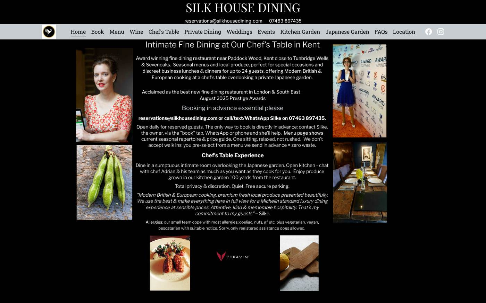
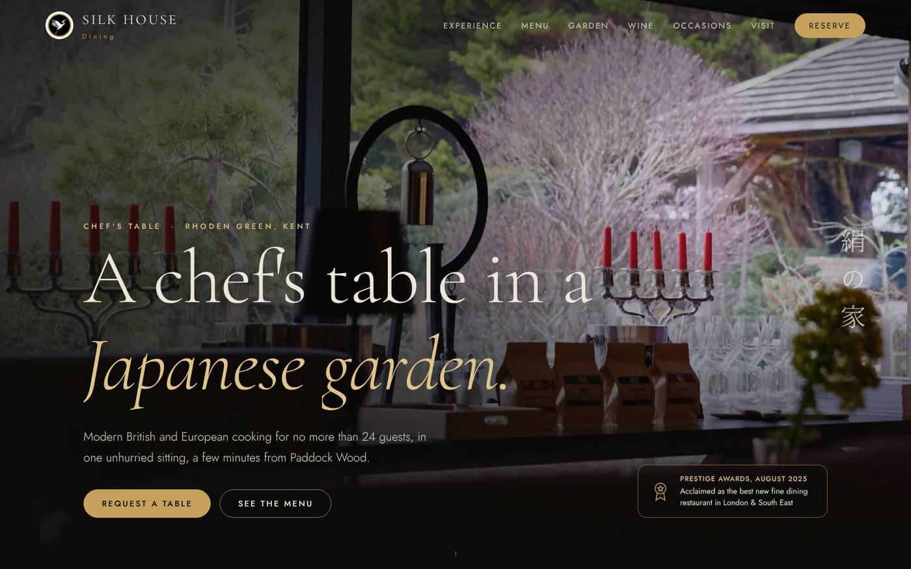
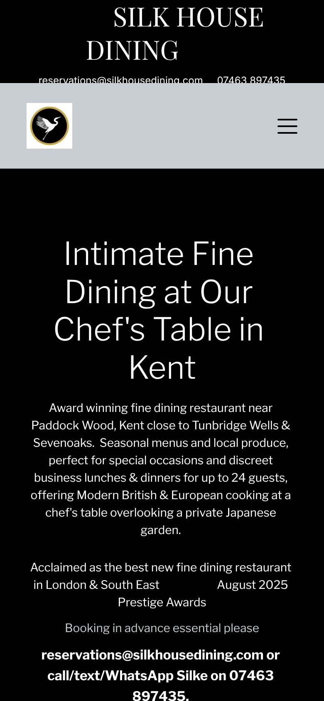
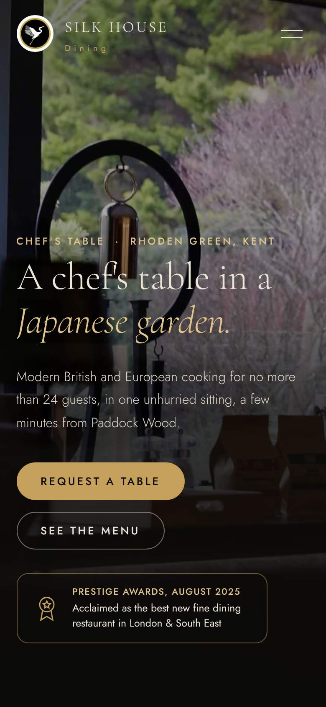

Home page and arrival




On a phone the headline begins 283px down, under a header whose email and number are clipped. The booking number appears at 779px as plain text. Across all twelve pages there are no tap to call, email or WhatsApp links.
Compare on a phone



